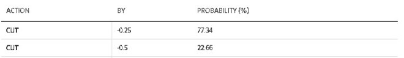

最新公布的美国就业报告意外疲弱，令市场猜测美联储下月可能会激进下调利率50个基点， 以及加拿大央行也需要加速货币宽松政策，会有一次大幅降息。
美国劳工部统计局表示，上月非农就业人数增加了114,000人，6月份的数据也下调至增加179,000人。失业率上升至4.3%。薪资增长也放缓。
美国利率期货市场目前预计，在9月18日的美联储会议上有65%的可能性会降息50个基点。市场还预计今年将降息约110个基点。
加拿大市场预测
这一切都在影响加拿大市场，推动关键债券收益率下降。交易员现在重新评估美国可能陷入衰退的担忧对加拿大利率前景的影响。加拿大央行今年已经两次降息，而美联储迄今为止保持其关键利率不变。
加拿大的五年期和两年期债券收益率分别下降，达到了两年多来的最低水平。五年期收益率因其对固定抵押贷款利率的影响而备受关注，而两年期收益率则对加拿大货币政策前景的变化特别敏感。
在本轮经济周期中，市场交易员在一定程度上预期加拿大央行在9月4日的下次政策会议上将激进地下调利率50个基点。
货币市场显示，至少在今年剩余的每次政策会议上，加拿大央行都会降息0.25%，并且在未来五个月中可能会有一次额外降息0.25%。
下周五，加拿大7月份的就业报告将出炉，预计将显示劳动力市场进一步疲软。皇家银行（RBC）目前预测仅增加15,000个新职位，失业率将从6月的6.4%上升到6.5%。
蒙特利尔银行首席经济师Doug Porter表示，更大的担忧是失业率持续上升和家庭就业缺乏增长。我们认为，保持高利率的理由几乎消失了，美联储现在将迅速回到接近中性利率的水平。因此，我们正在修改预测，包括连续降息，包括今年最后三次会议和明年头两次会议。我们暂时维持累计降息225个基点的预测，但认为美联储会更快地实现这一目标。
Porter说，现在预计加拿大央行在接下来的四次会议中每次都会降息，迅速将隔夜利率从现在的4.5%降到明年1月的3.5%，然后在2025年中期降到3.0%。这意味着加拿大央行将比预期更早半年多达到预期的终点。
以下是有关9月银行可能降息幅度的概率：

加拿大央行自今年6月以来两次降息，房市由于严重的不可负担性，并没有出现任何缓解。分析称，未来如果央行持续降息，相信会缓慢买家增加信心，使房市恢复活力。